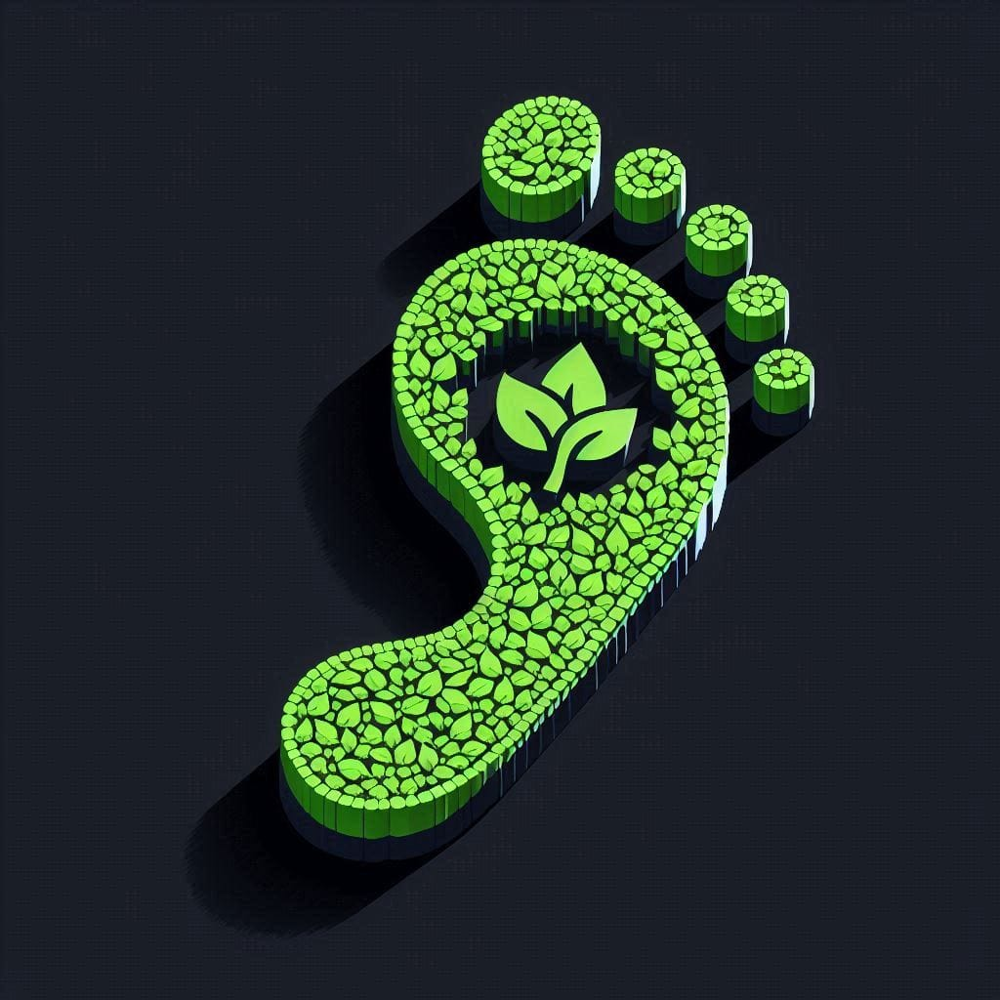

<header>
  <mat-toolbar>
    <button mat-icon-button aria-label="Menu" [matMenuTriggerFor]="mainMenu" accesskey="m" tabindex="0"><mat-icon>menu</mat-icon></button>
    <span ngClass="header-title">{{'rageTitle' | translate}}</span>
    <span ngClass="header-title-mobile">{{'rageTitleShort' | translate}}</span>

    
  </mat-toolbar>
</header>
<mat-menu #mainMenu="matMenu">
  <section *ngIf="role === 'User'">
    <button mat-menu-item routerLink="scope-one">{{'consumptions' | translate}}</button>
    <button mat-menu-item routerLink="scope-two">{{'emissions' | translate}}</button>
  </section>
  <section *ngIf="role === 'Admin'">
    <button mat-menu-item ngClass="rage-menu-item" routerLink="/organ-gen-data">{{'organizationGeneralData' | translate}}</button>
    <button mat-menu-item ngClass="rage-menu-item" routerLink="/user-management">{{'userManagement' | translate}}</button>
    <button mat-menu-item ngClass="rage-menu-item" routerLink="/dashboard">{{'dashboard' | translate}}</button>
    <hr>
    <button mat-menu-item ngClass="rage-menu-item">{{'emissionFactors' | translate}}</button>
  </section>
  <hr>
  <button mat-menu-item (click)="switchLanguage('en')">English</button>
  <button mat-menu-item (click)="switchLanguage('es')">Español</button>
  <hr>
  <button  mat-menu-item ngClass="rage-menu-item" (click)="logout()">{{'logout' | translate}}</button>
</mat-menu>

<mat-menu #consumptions="matMenu">
  <button mat-menu-item routerLink="fixed-installation">{{'fixedInstallationsFuelConsumption' | translate}}</button>
  <button mat-menu-item>{{'fuelConsumptionVeniclesMachinery' | translate}}</button>
  <button mat-menu-item>{{'fugitiveEmissions' | translate}}</button>
  <button mat-menu-item>{{'processEmissions' | translate}}</button>
</mat-menu>

<mat-menu #emissions="matMenu">
  <button mat-menu-item class="example-menu-bar-item" routerLink="/electricity-consumption">{{'electricityOtherEnergies' | translate}}</button>
</mat-menu>
